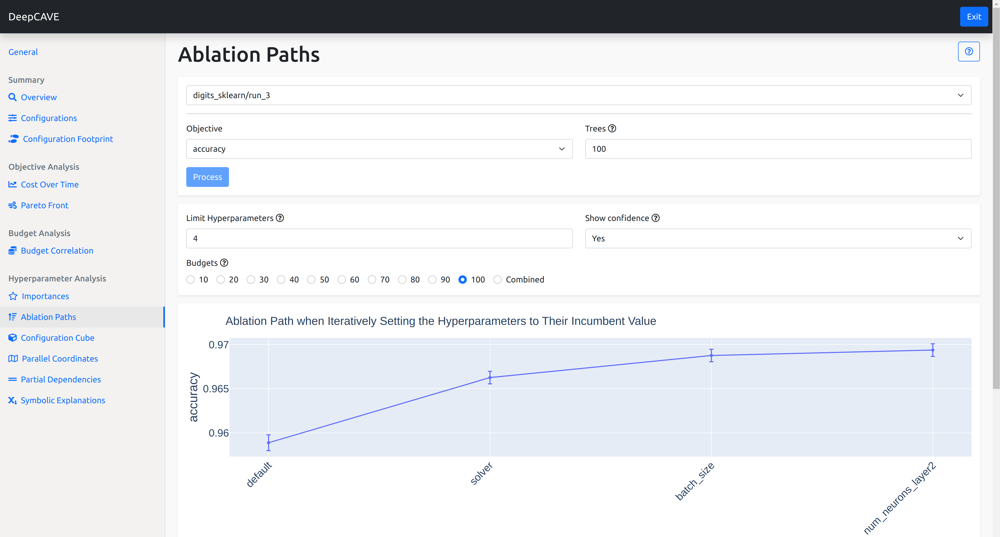
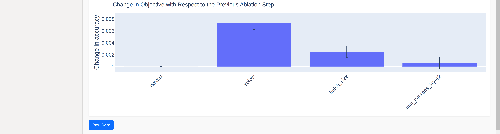
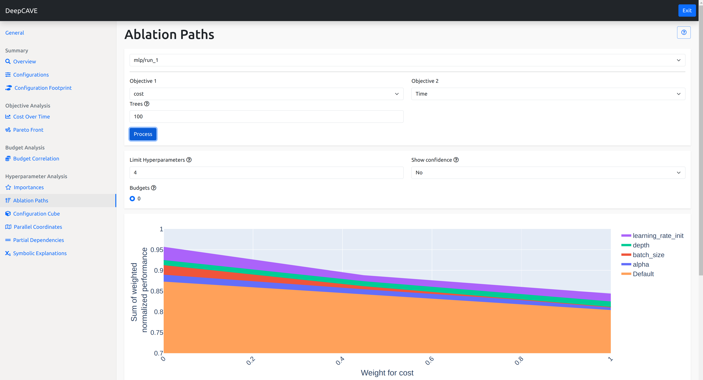

Ablation Paths¶
Ablation Paths is a method to analyze the importance of hyperparameters in a configuration space. Starting from a default configuration, the default configuration is iteratively changed to the incumbent configuration by changing one hyperparameter at a time, choosing the hyperparameter that leads to the largest improvement in the objective function at each step.
This plugin is capable of answering following questions:
How does each hyperparameter impact the objective function when transitioning from the default to the incumbent configuration?
Which hyperparameters lead to the most significant improvements in performance during the iterative optimization process?
Are there specific hyperparameters that are consistently crucial for performance improvements, regardless of the budget?
To learn more about Ablation Paths, please see the paper Efficient Parameter Importance Analysis via Ablation with Surrogates.
 Multi-Objective Ablation Paths¶
The ablation path analysis can be applied to two objectives displaying how the importance changes from one objective to the other. Based on a weighting scheme, the two objectives are scalarized to form a single objective for which the ablation path is calculated. The resulting plot shows the contribution of each hyperparameter to the performance for different weightings, including the default performance. Note that the y-axis displays the sum of the scalarized normalized performance. The weightings are calculated based on the points on the pareto-front, which is the set of non-dominated solutions. For more detail on this, please see the paper Hyperparameter Importance Analysis for Multi-Objective AutoML.
Options¶
Objective 1 / 2: Choose the objective you wish to calculate the ablation path for. Optionally, choose a second objective to see how the importance changes from one objective to the other.
Trees: Specify the number of trees for the random forest surrogate model used in calculating importance scores.
To refine your analysis, you can apply filters after calculation:
Limit Hyperparameters: Show only the top N most important hyperparameters.
Show Confidence: Selection of whether to display confidence estimates based on the surrogate model’s uncertainty estimates.
Budgets: Filter the results to view importance scores specific to certain multi-fidelity budgets, allowing you to analyze how hyperparameter importance varies with budget changes.
Note
If a plot is not showing for a specific budget, you might have to evaluate more configurations from your configuration space in order to improve the performance of the surrogate model. You can also try to increase the number of trees for the surrogate model.
Note
Please note the order the hyperparameters are in. The performance increase or decrease of each hyperparameter depends on the hyperparameter(s) prior to it. If the performance decreases no matter which hyperparameter is chosen next, the hyperparameter with the smallest decrease in performance is chosen. If two hyperparameters increase or decrease the performance equally, one is chosen randomly.